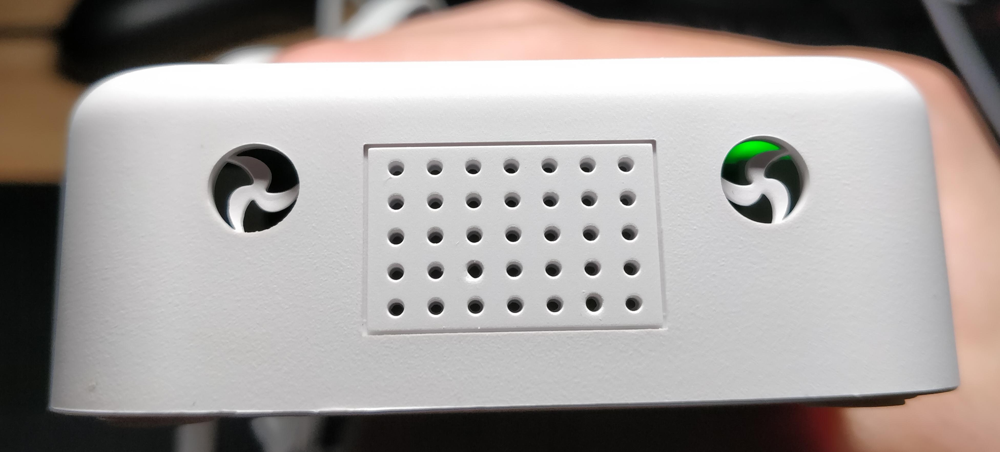

使用华为E5885L一年多了，对我而言，它不仅是一款完美的4G便携路由器，而且经过改造之后更是一款渗透利器。尽管这是一款非常美好的产品，但是在安全研究的工作中，还是发现有不少痛点。但是在使用了GL.iNet MIFI之后，完全满足了我的测试需求。尽管能够解决问题，但是某些地方太粗糙了。
外壳

在侧面有很特别的出风口，跟眼睛一样o皿o，里面有风扇的形状，又丑又没用。

拆机之后，可以看到简陋的电池黏在外壳上，用一张墨绿色的纸挡住

首先E5885L使用了HiSilicon LTE Cat6的芯片集，基带的型号是hi6932，这个基带芯片实际上还用于车规级的芯片919系列，至少性能是值得肯定的。但是，车规级芯片如果作为NAD，网络负载压力也十分地小，便携路由方案的RAM要比车规级小很多。一旦负载量增大，便会出现网络不稳定的问题，这种场景主要还是容易发生在测试过程中。
某些场景需要两个RJ45接口，E5885L就不能满足了，但是GL-MIFI有两个RJ45接口，并且WAN口可以配置成LAN口。十分灵活
有时需要进行ARP欺骗，因为E5885L的配置，导致不能成功实现。
E5885L修改IMEI要重启系统才能生效，而GL-MIFI的处理器和基带芯片是分开的，因此只需要重置4G模块就能生效
GL-MIFI支持USB外接3G/4G Modem，很多时候，PC无法使用Modem拨号、有可能是驱动不支持，有可能是pppd配置不正确，此时，我们能把目标Modem放到GL-MIFI上面识别，可以免去E-SIM飞线的工作。
使用
内部天线也是贴在外壳上，GL-MIFI使用的是移远EC20 4G模块，Mini PCI-E接口，国内版使用EC20-CEHCLG型号，仅支持上网，不能拨打电话。

在PCB上引出了许多AR9331的GPIO引脚，有助于开发IoT应用。
/dev/ttyUSB0 DM
/dev/ttyUSB1 GPS NMEA message output
/dev/ttyUSB2 AT commands
/dev/ttyUSB3 PPP connection or AT commands
wwan0 (QMI mode)USB network adapter
在Web界面提供了快速AT命令的插件。

很方便的进行基础操作

修改IMEI非常方便

支持配置APN，非常方便
默认开放SSH服务，基于OpenWRT编译，gl.inet提供的软件源速度快。

配置opkg装到SD卡
https://forum.gl-inet.com/t/mifi-install-package-on-external-storage-usb-or-sd-card/4332
其他
可以查询官方提供的MIFI的通信模组使用教程
https://github.com/domino-team/docs/blob/master/docs/mini/mifi.md
Osmocom也有移远EC20的hack说明
https://osmocom.org/projects/quectel-modems/wiki/EC20
新版固件已经禁用了AT+QLINUXCMD，所以不能直接发送命令
 CC BY-NC-SA 4.0
CC BY-NC-SA 4.0